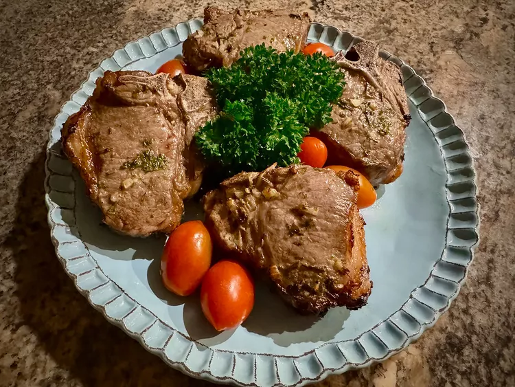

Air Fryer Lamb Chops

Description
These air fryer lamb chops marinate with minced fresh herbs, then cook to
perfection in the air fryer in under 10 minutes. Roasted potatoes and a
green salad make excellent side dishes.
Ingredients
- 1/2 cup extra virgin olive oil
- 1 lemon, zested and juiced
- 1 teaspoon kosher salt, or to taste
- 1/2 teaspoon freshly ground black pepper
- 2 cloves garlic, minced
- 1 teaspoon minced fresh oregano
- 1 teaspoon minced fresh mint
- 2 teaspoons minced fresh rosemary
- 3 teaspoons minced fresh parsley
- 4 (1/2-inch-thick) lamb loin chops
Steps
-
Combine olive oil, lemon zest and juice, salt, pepper, garlic, oregano,
mint, rosemary, and parsley in a large resealable plastic bag. Gently
squeeze contents inside the bag to mix.
-
Add lamb chops, squeeze out as much air as possible, reseal the bag, and
marinate in the refrigerator for at least 2 hours, or up to 4 hours.
Turn the bag after each hour, to marinate both sides of the chops.
-
When ready to cook, preheat the air fryer to 400 degrees F (200 degrees
C), or according to manufacturer's instructions.
-
Add lamb chops to the air fryer in a single layer and air fry for 3 1/2
minutes.
-
Turn chops and continue to air fry an additional 3 minutes. Test for
doneness with an instant read thermometer. 120 degrees F (49 degrees C)
is rare, 130 degrees F (54 degrees C) is medium, and 145 degrees F (63
degrees C) is medium well. Add time in 1-minute increments to achieve
desired doneness.
-
Tent with foil and allow to rest for 5 to 10 minutes before serving.
Home